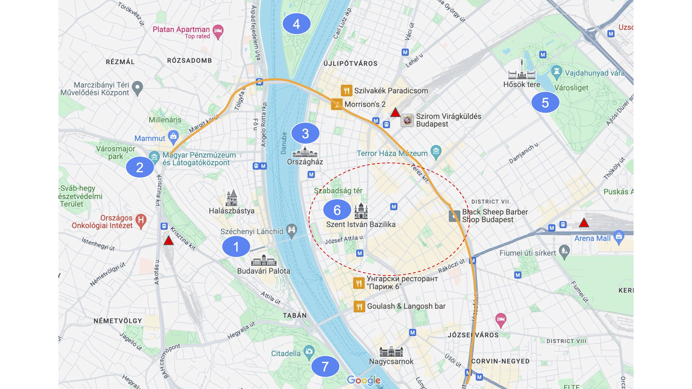
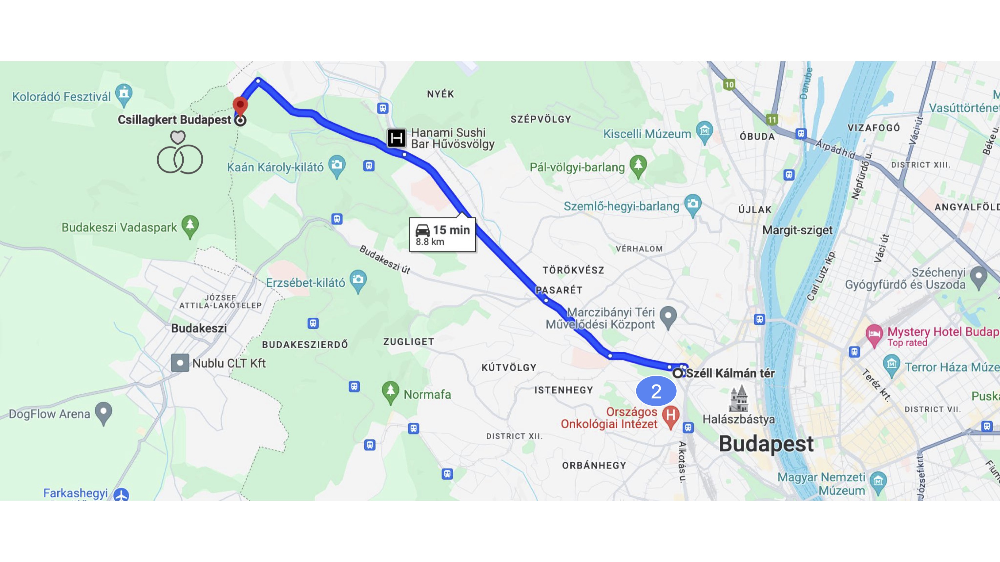

Budapest Travel Info
Fun things to do

1. Budai vár: The castle is one of my favorite things to show off in Budapest. It has everything, old pretty buildings and a wonderful view of the city! You can walk around the wall of the castle and check out the Mátyás church and the palace in about 2-3 hours. You can take bus 16 from Széll Kálmán tér.
2. Széll Kálmán tér: Main square for public transportation on the Buda side. Special significance for us is that it is 15 minutes by taxi from the wedding venue and the 4/6 tram stops here which is operation all throughout the night! (Yellow line on the map.) So you can probably get to your hotel from here easily the night of the wedding, but of course depending on where you are staying you might want to go with taxi all the way.

3. Parlament: Huge pretty building. It is visible from a lot of places including the Budai vár. It is possible to go inside with a guided tour to check out the crown and where decisions in Hungary are made if that is the kind of thing you are into. :)
4. Margit sziget: Beautiful island in the heart of the city. You can get there with the 4/6 tram easily. Very green with flower parks, musical fountains, ponds, and Hungarian street food. You can rent bikes and electric scooters to go around and explore. It is also amazing for running as there is a rubber running path all along the periphery of the island (5.5 km).
5. Városliget: Very highly recommended area, you can easily spend multiple days exploring this place. It is a big park with museums, baths, restaurants, etc. My favourite things:
- Hösök tere: Hero’s square is a statue park with all of our kings. There are art galleries on the sides.
- Vajdahunyad vár: Old castle with a pond.
- Néprajzi múzeum: Hungarian cultural museum. Never been inside but looks cool from the outside and you can go up to the roof. Also it might be interesting for you if you are not from Hungary. :)
- Széchenyi fürdő: My favourite thermal bath. There is an outside part for sunbathing, “proper” swimming and soaking in hot water. There is also a series of warm baths and saunas inside.
- Állatkert: I love the zoo but I mostly recommend it for people with children.
- Balloon: The is a gigantic balloon that you can take to look at the city from above.
6. Deák Ferenc tér: Main square for public transportation on the Pest side. It is also the “party centre”. There are a lot of places here for a fun night out! My favourite places: Szent István bazilika area for restaurants, Gozsdu udvar for food and drinks, Szimpla kert is a nice romkocsma (ruin bar in English, not sure how to explain, google it :) ), Karaván right next to it is a great spot for Hungarian fast food.
7. Gellért hegy: A nice green hill next to the river on the Buda side. It takes a bit of steep walking but there is a nice view from the top. I am thinking of going there with friends (everyone invited to the wedding) the evening before the wedding.
Other restaurants: Két szerecsen - bit fancier but reasonably priced and very delicious, near Andrássy út. Városliget Café is similar to Két szerecsen but with a prettier location, next to the lake at Városliget. Menza is recommended for modern Hungarian food. Padthai is a chain restaurant and Csenge’s favourite place to eat something filling and quick on the go.
Shopping: Váci utca, Vörösmarty tér, Andrássy út
Historical museums: Terror Háza múzeum - contains exhibits related to the fascist and communist regimes. Nemzeti múzeum - depends, it changes every now and then, but historical stuff.
Art galleries: Nemzeti Galéria - probably the best for fine art. Light Art Muzeum - fun contemporary art that uses light tricks. Lapo and Csenge have been there twice already and it is our favourite art related place. Recommended for kids too!
Other baths: We also recommend Rudas - especially at night, you can go and sit in a hot bath on the roof where you can see the city!
Other places to hike/run: Normafa - a really nice nature area with a great view and running path. You can take the 21/221 buses from Széll Kálmán tér to the stop called Normafa. From there you can take an easy 2.2km walk to Erzsébet kilátó - a nice lookout. There are Hungarian street food places at the end and the beginning of the walk.
TIP: You can get the app BudapestGO to purchase passes/tickets for public transportation. I recommend getting a weekly pass if you are in Budapest for more than 3 days.
Recommendation for travel and transportation
Bolt is an app like Uber but for taxis, highly recommended.
100E is a bus that goes between the airport and Deák Ferenc tér if you want to save some money on taxi.
Otherwise, public transportation in Budapest is great, you can use Google maps for the best routes. There is metro, tram and buses. The 4/6 tram is operational all night, the metro and buses stop around 11pm.
For flying to Budapest, you can fly to Budapest International Airport. You can also consider flying to Vienna first, there might be cheaper/better options there, and then taking another flight to Budapest. There is also a 2 hour train option between Vienna and Budapest which might be a better option for you depending on your layover time/prices.
Recommendation for accommodation
I recommend looking on Booking.com for hotel options or Airbnb for apartments. These days I am not sure which is better. If you want to be able to cook I recommend Airbnb. Airbnb tips: the self-check in option is a big pro and always read the reviews for red flags. Especially look out for comments about noise levels and annoying neighbours. Having a private room in a shared apartment is cheaper but not worth it in my opinion but it’s personal preference. Booking.com hotels are sometimes more convenient and I don’t think there is a difference in price anymore.
For location, I suggest something central but not close to the party area due to the noise (red dotted circle on the map). It is nice if you can find something close to the 4/6 tram line. Avoid places right next to one of the big train stations (Nyugati, Déli, Keleti, red triangles on the map).